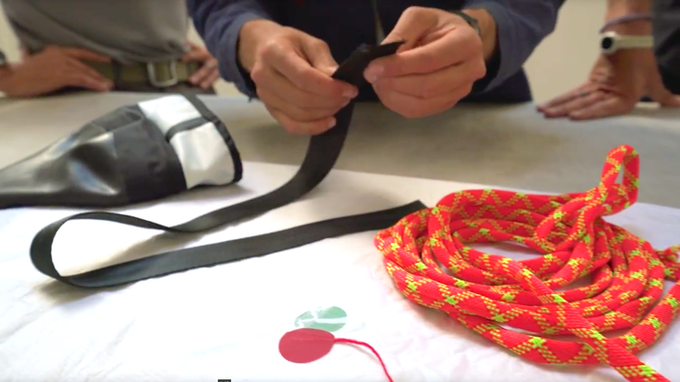

2020 Micro Steps for Macro Change
I am passionate about protecting the oceans. I surf, swim and explore in them. And I have seen firsthand the damage done. When Sustainable Surf and San Francisco-based sail recycler Mafia Bags approached me, I saw this project as an opportunity to create awareness and finance sustainability programs and to make a good bag with waste materials.
The materials we used for the Deep Blue Bag have been on their own adventures and now recycled: lightweight spinnaker sails, seatbelts, kite sails, used wetsuits, and climbing ropes from Yosemite’s El Capitan for the handles and detailing make up the majority of the materials for the bag. The diagonal blue wave-like aesthetic of the bag is a wide opening for the waterproof compartment where wet items such as wetsuits, towels or swim clothes can be transported without getting the rest of the bag contents wet. The lining of this compartment can be pulled out and dried easily upside-down with the help of a hook on the bag’s underside. There is a second large compartment that is cushioned and can be used for other items, as well as a laptop. A secret pocket camouflaged in the side seam has been designed to hide a wallet or keys. We even utilized wetsuit sleeves for the water bottle holder — which, as it turns out, is an extremely effective way to keep the bottle from falling out.

Made from upcycled material.
As a designer and an environmental advocate, I have always believed that sustainability is a core tenet of design. This is why it was a privilege to partner with Mafia Bags, a company that solely uses recycled materials. Since the materials are having a second life, every Deep Blue Bag will have its own unique detailing making them truly one-of-a-kind. But more importantly, when you buy this product, you’re not only investing in a functional adventure pack — you’re helping to keep our oceans clean, and supporting a movement that’s making treasure from our trash.
The Deep Blue Bag is a new backpack made for nature and urban adventures. All of the proceeds will benefit non-profit Sustainable Surf and support programs that protect the oceans.